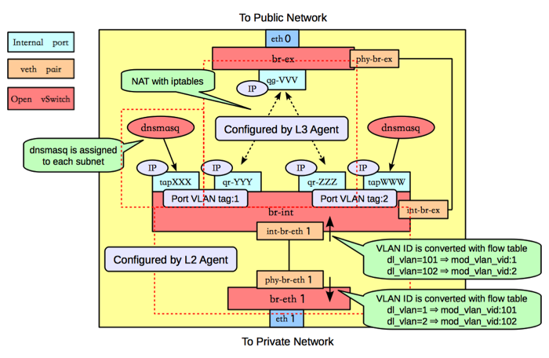
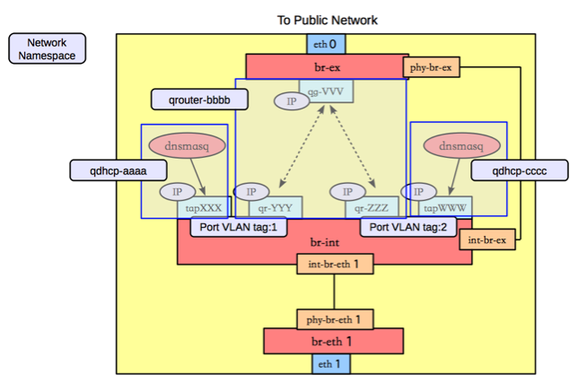

Layer 3 Networking via Layer 3 & OpenVSwitch Agents¶
This page discusses the usage of Neutron with Layer 3 functionality enabled.
Neutron logical network setup¶
vagrant@bionic64:~/devstack$ openstack network list
+--------------------------------------+---------+----------------------------------------------------------------------------+
| ID | Name | Subnets |
+--------------------------------------+---------+----------------------------------------------------------------------------+
| 6ece2847-971b-487a-9c7b-184651ebbc82 | public | 0d9c4261-4046-462f-9d92-64fb89bc3ae6, 9e90b059-da97-45b8-8cb8-f9370217e181 |
| 713bae25-8276-4e0a-a453-e59a1d65425a | private | 6fa3bab9-103e-45d5-872c-91f21b52ceda, c5c9f5c2-145d-46d2-a513-cf675530eaed |
+--------------------------------------+---------+----------------------------------------------------------------------------+
vagrant@bionic64:~/devstack$ openstack subnet list
+--------------------------------------+---------------------+--------------------------------------+--------------------+
| ID | Name | Network | Subnet |
+--------------------------------------+---------------------+--------------------------------------+--------------------+
| 0d9c4261-4046-462f-9d92-64fb89bc3ae6 | public-subnet | 6ece2847-971b-487a-9c7b-184651ebbc82 | 172.24.4.0/24 |
| 6fa3bab9-103e-45d5-872c-91f21b52ceda | ipv6-private-subnet | 713bae25-8276-4e0a-a453-e59a1d65425a | 2001:db8:8000::/64 |
| 9e90b059-da97-45b8-8cb8-f9370217e181 | ipv6-public-subnet | 6ece2847-971b-487a-9c7b-184651ebbc82 | 2001:db8::/64 |
| c5c9f5c2-145d-46d2-a513-cf675530eaed | private-subnet | 713bae25-8276-4e0a-a453-e59a1d65425a | 10.0.0.0/24 |
+--------------------------------------+---------------------+--------------------------------------+--------------------+
vagrant@bionic64:~/devstack$ openstack port list
+--------------------------------------+------+-------------------+----------------------------------------------------------------------------------------------------+--------+
| ID | Name | MAC Address | Fixed IP Addresses | Status |
+--------------------------------------+------+-------------------+----------------------------------------------------------------------------------------------------+--------+
| 420abb60-2a5a-4e80-90a3-3ff47742dc53 | | fa:16:3e:2d:5c:4e | ip_address='172.24.4.7', subnet_id='0d9c4261-4046-462f-9d92-64fb89bc3ae6' | ACTIVE |
| | | | ip_address='2001:db8::1', subnet_id='9e90b059-da97-45b8-8cb8-f9370217e181' | |
| b42d789d-c9ed-48a1-8822-839c4599301e | | fa:16:3e:0a:ff:24 | ip_address='10.0.0.1', subnet_id='c5c9f5c2-145d-46d2-a513-cf675530eaed' | ACTIVE |
| cfff6574-091c-4d16-a54b-5b7f3eab89ce | | fa:16:3e:a0:a3:9e | ip_address='10.0.0.2', subnet_id='c5c9f5c2-145d-46d2-a513-cf675530eaed' | ACTIVE |
| | | | ip_address='2001:db8:8000:0:f816:3eff:fea0:a39e', subnet_id='6fa3bab9-103e-45d5-872c-91f21b52ceda' | |
| e3b7fede-277e-4c72-b66c-418a582b61ca | | fa:16:3e:13:dd:42 | ip_address='2001:db8:8000::1', subnet_id='6fa3bab9-103e-45d5-872c-91f21b52ceda' | ACTIVE |
+--------------------------------------+------+-------------------+----------------------------------------------------------------------------------------------------+--------+
vagrant@bionic64:~/devstack$ openstack subnet show c5c9f5c2-145d-46d2-a513-cf675530eaed
+-------------------+--------------------------------------+
| Field | Value |
+-------------------+--------------------------------------+
| allocation_pools | 10.0.0.2-10.0.0.254 |
| cidr | 10.0.0.0/24 |
| created_at | 2016-11-08T21:55:22Z |
| description | |
| dns_nameservers | |
| enable_dhcp | True |
| gateway_ip | 10.0.0.1 |
| host_routes | |
| id | c5c9f5c2-145d-46d2-a513-cf675530eaed |
| ip_version | 4 |
| ipv6_address_mode | None |
| ipv6_ra_mode | None |
| name | private-subnet |
| network_id | 713bae25-8276-4e0a-a453-e59a1d65425a |
| project_id | 35e3820f7490493ca9e3a5e685393298 |
| revision_number | 2 |
| service_types | |
| subnetpool_id | b1f81d96-d51d-41f3-96b5-a0da16ad7f0d |
| updated_at | 2016-11-08T21:55:22Z |
+-------------------+--------------------------------------+
Neutron logical router setup¶
vagrant@bionic64:~/devstack$ openstack router list
+--------------------------------------+---------+--------+-------+-------------+-------+----------------------------------+
| ID | Name | Status | State | Distributed | HA | Project |
+--------------------------------------+---------+--------+-------+-------------+-------+----------------------------------+
| 82fa9a47-246e-4da8-a864-53ea8daaed42 | router1 | ACTIVE | UP | False | False | 35e3820f7490493ca9e3a5e685393298 |
+--------------------------------------+---------+--------+-------+-------------+-------+----------------------------------+
vagrant@bionic64:~/devstack$ openstack router show router1
+-------------------------+------------------------------------------------------------------------------------------------------------------------------------------------------+
| Field | Value |
+-------------------------+------------------------------------------------------------------------------------------------------------------------------------------------------+
| admin_state_up | UP |
| availability_zone_hints | |
| availability_zones | nova |
| created_at | 2016-11-08T21:55:30Z |
| description | |
| distributed | False |
| external_gateway_info | {"network_id": "6ece2847-971b-487a-9c7b-184651ebbc82", "enable_snat": true, "external_fixed_ips": [{"subnet_id": "0d9c4261-4046-462f- |
| | 9d92-64fb89bc3ae6", "ip_address": "172.24.4.7"}, {"subnet_id": "9e90b059-da97-45b8-8cb8-f9370217e181", "ip_address": "2001:db8::1"}]} |
| flavor_id | None |
| ha | False |
| id | 82fa9a47-246e-4da8-a864-53ea8daaed42 |
| name | router1 |
| project_id | 35e3820f7490493ca9e3a5e685393298 |
| revision_number | 8 |
| routes | |
| status | ACTIVE |
| updated_at | 2016-11-08T21:55:51Z |
+-------------------------+------------------------------------------------------------------------------------------------------------------------------------------------------+
vagrant@bionic64:~/devstack$ openstack port list --router router1
+--------------------------------------+------+-------------------+---------------------------------------------------------------------------------+--------+
| ID | Name | MAC Address | Fixed IP Addresses | Status |
+--------------------------------------+------+-------------------+---------------------------------------------------------------------------------+--------+
| 420abb60-2a5a-4e80-90a3-3ff47742dc53 | | fa:16:3e:2d:5c:4e | ip_address='172.24.4.7', subnet_id='0d9c4261-4046-462f-9d92-64fb89bc3ae6' | ACTIVE |
| | | | ip_address='2001:db8::1', subnet_id='9e90b059-da97-45b8-8cb8-f9370217e181' | |
| b42d789d-c9ed-48a1-8822-839c4599301e | | fa:16:3e:0a:ff:24 | ip_address='10.0.0.1', subnet_id='c5c9f5c2-145d-46d2-a513-cf675530eaed' | ACTIVE |
| e3b7fede-277e-4c72-b66c-418a582b61ca | | fa:16:3e:13:dd:42 | ip_address='2001:db8:8000::1', subnet_id='6fa3bab9-103e-45d5-872c-91f21b52ceda' | ACTIVE |
+--------------------------------------+------+-------------------+---------------------------------------------------------------------------------+--------+
See the Networking Guide for more detail on the creation of networks, subnets, and routers.
Neutron Routers are realized in OpenVSwitch¶

“router1” in the Neutron logical network is realized through a port (“qr-0ba8700e-da”) in OpenVSwitch - attached to “br-int”:
vagrant@bionic64:~/devstack$ sudo ovs-vsctl show
b9b27fc3-5057-47e7-ba64-0b6afe70a398
Bridge br-int
Port "qr-0ba8700e-da"
tag: 1
Interface "qr-0ba8700e-da"
type: internal
Port br-int
Interface br-int
type: internal
Port int-br-ex
Interface int-br-ex
Port "tapbb60d1bb-0c"
tag: 1
Interface "tapbb60d1bb-0c"
type: internal
Port "qvob2044570-ad"
tag: 1
Interface "qvob2044570-ad"
Port "int-br-eth1"
Interface "int-br-eth1"
Bridge "br-eth1"
Port "phy-br-eth1"
Interface "phy-br-eth1"
Port "br-eth1"
Interface "br-eth1"
type: internal
Bridge br-ex
Port phy-br-ex
Interface phy-br-ex
Port "qg-0143bce1-08"
Interface "qg-0143bce1-08"
type: internal
Port br-ex
Interface br-ex
type: internal
ovs_version: "1.4.0+build0"
vagrant@bionic64:~/devstack$ brctl show
bridge name bridge id STP enabled interfaces
br-eth1 0000.e2e7fc5ccb4d no
br-ex 0000.82ee46beaf4d no phy-br-ex
qg-41efb3f9-f0
qg-77e0666b-cd
br-int 0000.5e46cb509849 no int-br-ex
qr-54c9cd83-43
qvo199abeb2-63
qvo1abbbb60-b8
tap74b45335-cc
qbr199abeb2-63 8000.ba06e5f8675c no qvb199abeb2-63
tap199abeb2-63
qbr1abbbb60-b8 8000.46a87ed4fb66 no qvb1abbbb60-b8
tap1abbbb60-b8
virbr0 8000.000000000000 yes
Finding the router in ip/ipconfig¶
The neutron-l3-agent uses the Linux IP stack and iptables to perform L3 forwarding and NAT. In order to support multiple routers with potentially overlapping IP addresses, neutron-l3-agent defaults to using Linux network namespaces to provide isolated forwarding contexts. As a result, the IP addresses of routers will not be visible simply by running “ip addr list” or “ifconfig” on the node. Similarly, you will not be able to directly ping fixed IPs.
To do either of these things, you must run the command within a particular router’s network namespace. The namespace will have the name “qrouter-<UUID of the router>.

For example:
vagrant@bionic64:~$ openstack router list
+--------------------------------------+---------+-------------------------------------------------------------------------+
| ID | Name | Status | State | Distributed | HA | Project |
+--------------------------------------+---------+-------------------------------------------------------------------------+
| ad948c6e-afb6-422a-9a7b-0fc44cbb3910 | router1 | Active | UP | True | False | 35e3820f7490493ca9e3a5e685393298 |
+--------------------------------------+---------+-------------------------------------------------------------------------+
vagrant@bionic64:~/devstack$ sudo ip netns exec qrouter-ad948c6e-afb6-422a-9a7b-0fc44cbb3910 ip addr list
18: lo: <LOOPBACK,UP,LOWER_UP> mtu 16436 qdisc noqueue state UNKNOWN
link/loopback 00:00:00:00:00:00 brd 00:00:00:00:00:00
inet 127.0.0.1/8 scope host lo
inet6 ::1/128 scope host
valid_lft forever preferred_lft forever
19: qr-54c9cd83-43: <BROADCAST,MULTICAST,PROMISC,UP,LOWER_UP> mtu 1500 qdisc noqueue state UNKNOWN
link/ether fa:16:3e:dd:c1:8f brd ff:ff:ff:ff:ff:ff
inet 10.0.0.1/24 brd 10.0.0.255 scope global qr-54c9cd83-43
inet6 fe80::f816:3eff:fedd:c18f/64 scope link
valid_lft forever preferred_lft forever
20: qg-77e0666b-cd: <BROADCAST,MULTICAST,PROMISC,UP,LOWER_UP> mtu 1500 qdisc noqueue state UNKNOWN
link/ether fa:16:3e:1f:d3:ec brd ff:ff:ff:ff:ff:ff
inet 192.168.27.130/28 brd 192.168.27.143 scope global qg-77e0666b-cd
inet6 fe80::f816:3eff:fe1f:d3ec/64 scope link
valid_lft forever preferred_lft forever
Provider Networking¶
Neutron can also be configured to create provider networks.
L3 agent extensions¶
See L3 Agent Extensions.